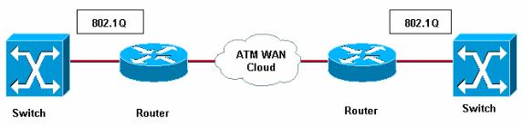

IPv4 es la versión 4 del Protocolo de Internet (IP o Inernet Protocol) y constituye la primera versión de IP que es implementada de forma extensiva. IPv4 es el principal protocolo utilizado en el Nivel de Red del Modelo TCP/IP para Internet.
El propósito principal de IP es proveer una dirección única a cada sistema para asegurar que una computadora en Internet pueda identificar a otra.
IPv4 utiliza direcciones de 32 bits (4 bytes) que limita el número de direcciones posibles a utilizar a 4,294,967,295 direcciones únicas.
Las direcciones IP se pueden expresar como números de notación decimal: se dividen los 32 bits de la dirección en cuatro octetos. El valor decimal de cada octeto está comprendido en el intervalo de 0 a 255 [el número binario de 8 bits más alto es 11111111 y esos bits, de derecha a izquierda, tienen valores decimales de 1, 2, 4, 8, 16, 32, 64 y 128, lo que suma 255].
Muchas de estas direcciones están reservadas para propósitos especiales como redes privadas, Multidifusión (Multicast), etc. Debido a esto se reduce el número de direcciones IP que realmente se pueden utilizar, es esto mismo lo que ha impulsado la creación de IPv6 como reemplazo eventual dentro de algunos años para IPv4.
El Internet Protocol version 6 (IPv6) es una versión del protocolo Internet Protocol (IP), definidaen el RFC 2460 y diseñada para reemplazar a Internet Protocol version 4 (IPv4) RFC 791, que actualmente está implementado en la gran mayoría de dispositivos que acceden a Internet.
El Modo de Transferencia Asíncrona es una tecnología de telecomunicación desarrollada para hacer frente a la gran demanda de capacidad de transmisión para servicios y aplicaciones
